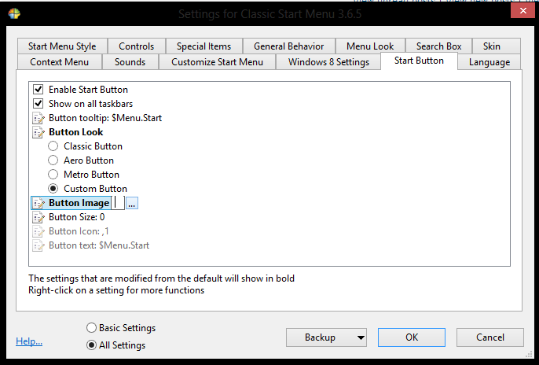

A really silly question, but can someone please give a tutorial on how to install the button? Doesn't have to really be in detail, but just easy to understand and clear.
Thanks
| Classic Shell http://www.classicshell.net/forum/ |
|
| How to install buttons? http://www.classicshell.net/forum/viewtopic.php?f=18&t=344 |
Page 1 of 1 |
| Author: | TheUsualGamer [ Wed Mar 06, 2013 11:11 am ] |
| Post subject: | How to install buttons? |
A really silly question, but can someone please give a tutorial on how to install the button? Doesn't have to really be in detail, but just easy to understand and clear. Thanks |
|
| Author: | Jcee [ Wed Mar 06, 2013 4:46 pm ] |
| Post subject: | Re: How to install buttons? |
there used to be a tutorial for it here somewhere but i cant find it right now, im thinking maybe it should be linked to in a sticky in this folder for future reference anyways.. heres a quick step by step i'm amusing you have classic shell installed.. save the custom button (right click, save image as) you want to use somewhere it can stay (you have to keep the file, i recommend in the classic shell install folder which is probably C:\Program Files\Classic Shell) click all settings in the bottom if you haven't yet go to the start button tab go to the option 'button look' select custom go to the button image; option click the little "..." at the end, and browse for your image hit ok right click your start menu, and exit out, then re-launch the program if you dont know where it is its probably here: C:\Program Files\Classic Shell\ClassicStartMenu.exe |
|
| Author: | TheUsualGamer [ Thu Mar 07, 2013 10:49 am ] |
| Post subject: | Re: How to install buttons? |
Thanks for answering Jcee! But I managed to figure it out now, but I appreciate your help! Tutorial On Changing Button icon: - Right Click the Start Button - Go to settings - Click The Start button tab - For The button look section, make sure you tick custom button - Then on the button image section (Right below the look section) Click the "..." and locate your image/icon Here's a screenshot:  |
|
| Author: | vintageologist [ Sat Mar 09, 2013 1:51 am ] |
| Post subject: | Re: How to install buttons? |
Just as a side note, Button Size 0 will give you its original size while any other value will scale it to that width (and height, proportionally) in pixels. I for my part have size 48 in use. And as a second note in case you're wondering about potentially weirdish behaviour of your button: There are three states: Normal, mouseover, pressed. Since these all have to be in the same image, the height of it is just split into three equal parts. So if you have a 99 pixel high image, the first 33 are the normal, the next 33 the mouseover and the last 33 the pressed state that is going to be displayed. |
|
| Author: | Tenzen [ Sat Mar 09, 2013 3:59 pm ] |
| Post subject: | Re: How to install buttons? |
good tip on size 0 also, if you want some sort of button behavior, the image on the bottom 1/3 of your .png file (your Pressed state) should be nudged a few pixels down & to the left, or whatever direction you think looks like a button push |
|
| Page 1 of 1 | All times are UTC - 8 hours [ DST ] |
| Powered by phpBB® Forum Software © phpBB Group https://www.phpbb.com/ |
|